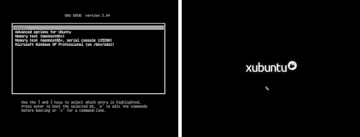
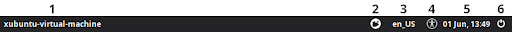
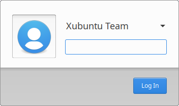
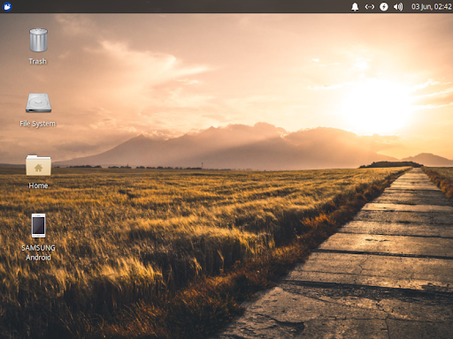
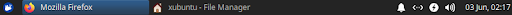
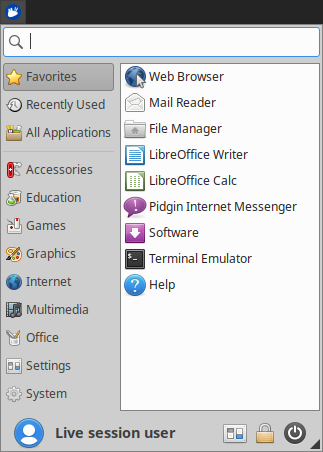
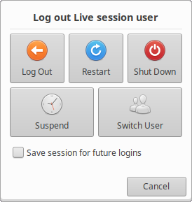

Table des matières
Si vous avez installé Xubuntu en plus d'un autre OS (système d'exploitation), également appelé double démarrage, le menu de démarrage GRUB vous sera présenté lorsque vous allumerez votre ordinateur. Ce menu vous propose des options pour démarrer Xubuntu, démarrer Xubuntu avec des options avancées, exécuter un test de mémoire ou démarrer d'autres systèmes d'exploitation. Vous pouvez appuyer sur la touche Échap avant de démarrer pour accéder au menu GRUB si vous n'êtes pas sur un système à double démarrage.
Une fois le processus de démarrage commencé, vous verrez l'écran de démarrage de Xubuntu avec une animation circulaire.

![[Note]](../../libs-common/images/note.png)
|
|
|
Si vous souhaitez personnaliser l'apparence et le comportement du menu de démarrage GRUB, vous pouvez installer Grub Customizer ( |
Une fois le processus de démarrage terminé, l'écran de connexion apparaît. Il contient un panneau en haut et une boîte de dialogue de connexion au centre de l'écran. De gauche à droite, le panneau contient le nom de l'ordinateur, le sélecteur de session, le sélecteur de paramètres régionaux/langues, le sélecteur d'options d'accessibilité, la date et l'heure. heure et options de déconnexion.

La boîte de dialogue de connexion vous permet de sélectionner un nom de compte et de saisir le mot de passe pour vous connecter à cette session. Vous ne verrez pas l'écran de connexion si vous avez sélectionné l'option Se connecter automatiquement dans la section Qui êtes-vous ? de l'écran de l’installateur.

|
|
|
|
Pour activer ou désactiver la connexion automatique d'un compte utilisateur, ouvrez Utilisateurs et groupes, trouvable dans le |
Semblable à l'écran de connexion, le bureau Xubuntu par défaut comporte un seul panneau situé en haut de l'écran, ainsi qu'un fond d'écran et des icônes de bureau.

Le panneau est utilisé pour lancer et changer d'application ainsi que pour fournir un accès facile aux indicateurs d'état interactifs du système afin de voir et de modifier l'état des composants importants de votre système.

Sur le côté gauche du panneau, vous trouverez le bouton  , qui a l'icône du logo Xubuntu. À côté se trouve la liste des applications en cours d’exécution avec des fenêtres disponibles, appelée liste de fenêtres ou boutons de la barre des tâches.
, qui a l'icône du logo Xubuntu. À côté se trouve la liste des applications en cours d’exécution avec des fenêtres disponibles, appelée liste de fenêtres ou boutons de la barre des tâches.
Sur la droite du panneau se trouve la zone de notification, qui contient des indicateurs affichant des informations d'état, telles que la connectivité réseau et le niveau de volume sonore. Le premier indicateur à l'extrême droite est l'horloge, qui affiche la date et l'heure du système. Cliquer sur l'horloge affiche le calendrier. Certaines icônes d'indicateur apparaissent et disparaissent en fonction du contexte. L'icône Bluetooth, par exemple, apparaîtra lorsqu'un adaptateur Bluetooth est présent. La zone de notification héberge également les icônes de la barre d'état système des applications en cours d'exécution prenant en charge cette fonctionnalité, telles que Transmission ou Audacious.
|
|
|
|
L'emplacement du panneau et de ses composants ainsi que diverses options peuvent être personnalisés en cliquant avec le bouton droit sur le panneau et en sélectionnant → . |

Cliquer sur le bouton du menu  sur le panneau ou appuyer sur le raccourci clavier
sur le panneau ou appuyer sur le raccourci clavier  Ctrl+Échap ouvrira le menu, qui comporte cinq (5) sections :
Ctrl+Échap ouvrira le menu, qui comporte cinq (5) sections :
Un champ de recherche pour filtrer les applications installées.
Une colonne répertoriant les catégories d'applications.
Une liste des applications dans la catégorie sélectionnée. Les favoris sont sélectionnés et affichés par défaut.
Le nom et la photo du compte utilisateur.
Boutons de commande pour le  gestionnaire de paramètres, verrouillant l'écran et la boîte de dialogue de déconnexion.
gestionnaire de paramètres, verrouillant l'écran et la boîte de dialogue de déconnexion.
|
|
|
|
Pour personnaliser l'apparence et le comportement du |
Le bureau par défaut comporte trois icônes principales : Répertoire personnel, Système de fichiers et Corbeille, ainsi que des icônes pour les partitions et les périphériques amovibles, s'ils sont présents. Des fichiers, dossiers, lanceurs d'applications et raccourcis de sites Web supplémentaires peuvent être ajoutés au bureau et peuvent être organisés manuellement ou automatiquement. Vous pouvez définir le fond d'écran du bureau et les icônes du bureau visibles, ainsi que leurs options, en cliquant avec le bouton droit dans une zone vide du bureau et en choisissant Paramètres du bureau dans le menu contextuel.
Xubuntu fournit une collection de commandes pour gérer votre session. Ces commandes sont accessibles depuis la section des boutons de commande du  ainsi que via les touches de raccourci.
ainsi que via les touches de raccourci.
La première de ces commandes est le bouton , qui verrouille la session en cours et présente la boîte de dialogue de connexion pour reprendre la session. Le verrouillage de l'écran est également accessible par deux raccourcis clavier :  Super+L et
Super+L et  Ctrl+Alt+L.
Ctrl+Alt+L.

Les commandes restantes de la session sont accessibles via le bouton , ainsi que les raccourcis clavier  Ctrl+Alt+Suppr, qui ouvrent une boîte de dialogue et donnent accès aux commandes pour :
Ctrl+Alt+Suppr, qui ouvrent une boîte de dialogue et donnent accès aux commandes pour :
Déconnexion - Termine la session actuelle.
Redémarrer - Redémarrer l'ordinateur.
Éteindre - Éteindre l'ordinateur.
Mise en veille - Met l'ordinateur en sommeil et en consommation électrique minimale.
Hibernation - Enregistrez la session de bureau en cours et éteint l'ordinateur. Lorsque vous redémarrerez l'ordinateur, vous reprendrez la session.
Changer d'utilisateur - Se connecter via un autre compte d'utilisateur.
|
|
|
|
Il est possible d'accéder aux commandes de gestion de session depuis le panneau en cliquant avec le bouton droit sur le panneau puis en sélectionnant → puis en ajoutant l'entrée Boutons d'action. Il est également possible d'ajouter des commandes de gestion de session supplémentaires au |
|
|
|
|
La mise en veille prolongée (hibernation) est désactivée par défaut dans Xubuntu et les instructions pour l'activer peuvent être trouvées dans Activation de l'hibernation. |
 |
 |
|
| Chapitre 2. Installation |

|
Chapitre 4. Applications par défaut |